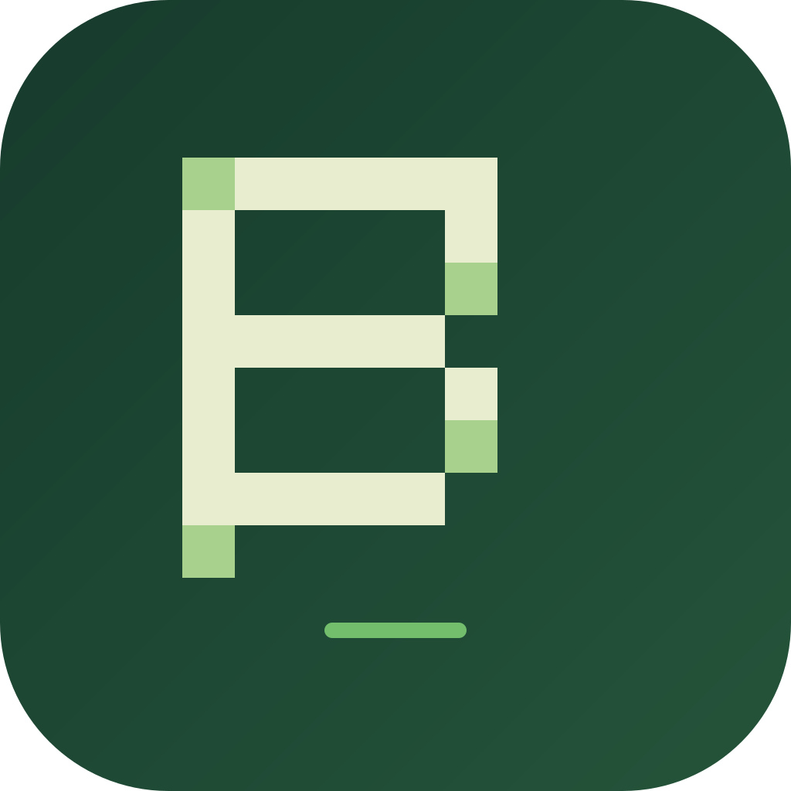
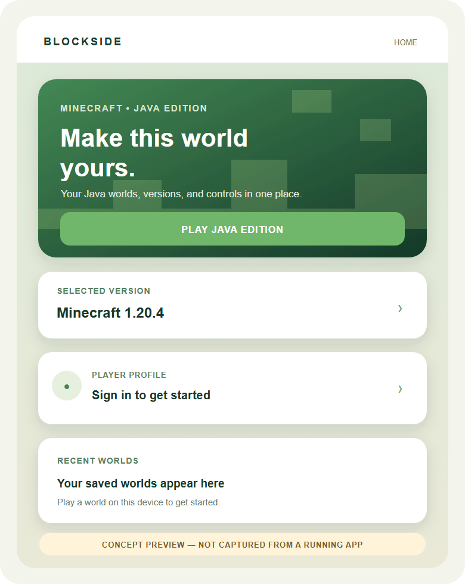

Launcher interface
Blockside’s custom dashboard and visual identity sit on the iOS launcher shell.

BLOCKSIDEA custom launcher interface for Minecraft: Java Edition on iPhone and iPad, built on the PojavLauncher iOS engine.
iOS 12.2 or later. Install by sideloading and enable JIT for playable performance. The IPA is not an App Store or direct OTA install. Minecraft files are not bundled.

Blockside’s custom dashboard and visual identity sit on the iOS launcher shell.
The device IPA is built from the PojavLauncher iOS v2.2 Java engine and its native stack.
Game versions download after sign-in. No Minecraft account, assets, or worlds are included.
The artwork on this page is an illustration, not a screenshot captured from an iPhone or a Minecraft game. Physical-device gameplay has not yet been verified.